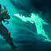

Pyke, o Estripador das Águas Sangrentas
Rota
-
Passiva

DÁDIVA DOS AFOGADOS
Quando Pyke está Camufladodos inimigos, ele regenera o dano recebido recentemente de Campeões. Pyke também não ganha Vida máxima adicional de nenhuma fonte, mas ganha DdA adicional.
-
Habilidade Q

ESPETO DE OSSO
Pyke esfaqueia um inimigo à sua frente ou puxa um inimigo em direção a si mesmo.
-
Habilidade W

MERGULHO FANTASMA
Pyke entra em Camuflagem e ganha Vdm significativa que decai ao longo do tempo.
-
Habilidade E
RESSACA ESPECTRAL
Pyke avança e deixa para trás um fantasma, que avança até ele e atordoa os Campeões inimigos pelo caminho.
-
Habilidade R

MORTE DAS PROFUNDEZAS
Pyke teleporta até inimigos com Vida baixa e os executa, permitindo que ele conjure a habilidade novamente e concedendo ouro adicional ao aliado que der assistência.
Habilidades
Curiosidades
Um arpoador renomado vindo das Docas da Matança nas Águas de Sentina, Pyke deveria ter encontrado sua morte na barriga de um gigante Peixe-Jaula... mas, ainda assim, ele retornou. Agora, vagando pelos becos úmidos de sua cidade natal, ele usa seus novos dons sobrenaturais para trazer um rápido e grotesco fim para aqueles que fazem fortuna explorando os outros. Hoje, os mesmos habitantes da cidade que se orgulham de caçar monstros estão sendo caçados por um.